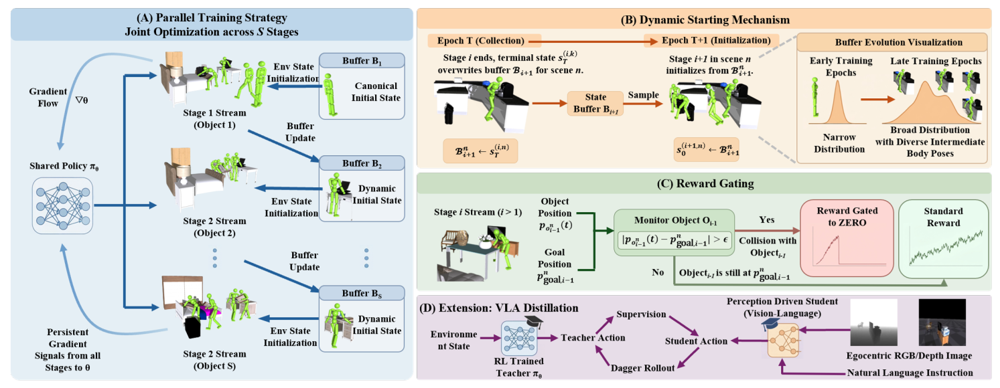
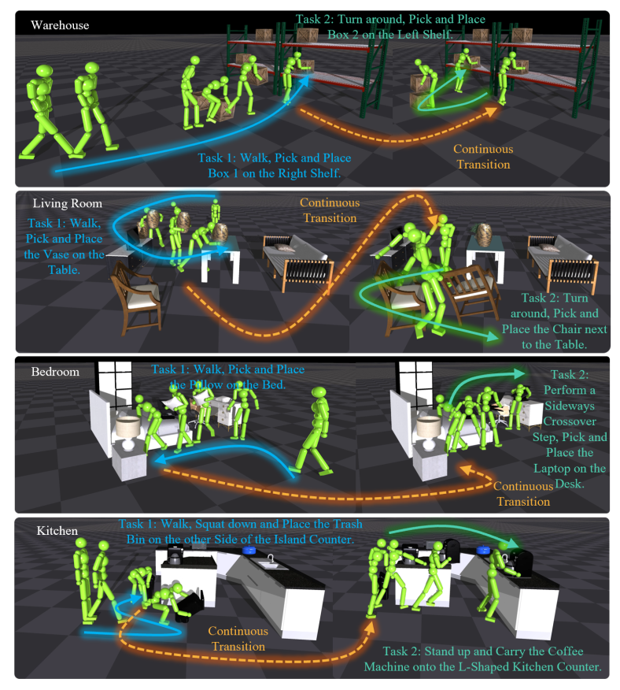
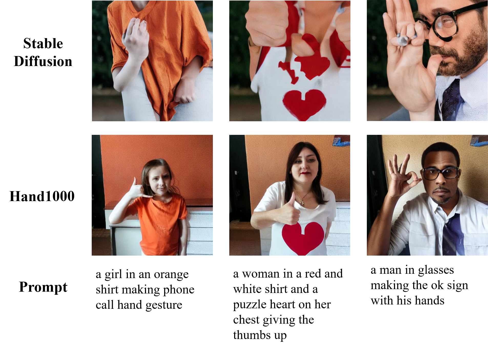
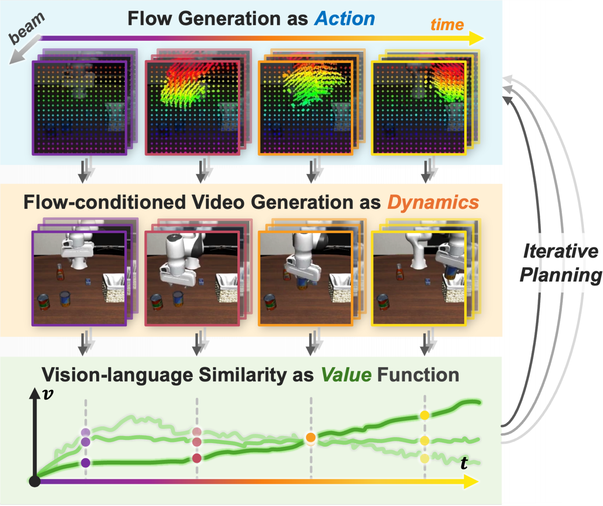
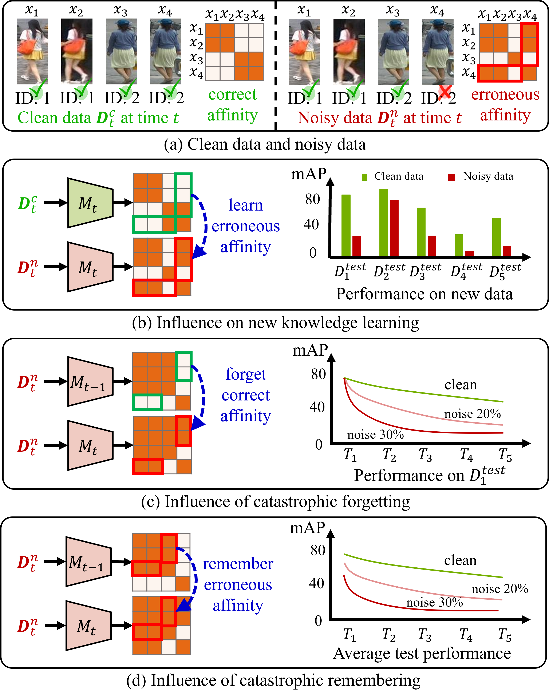
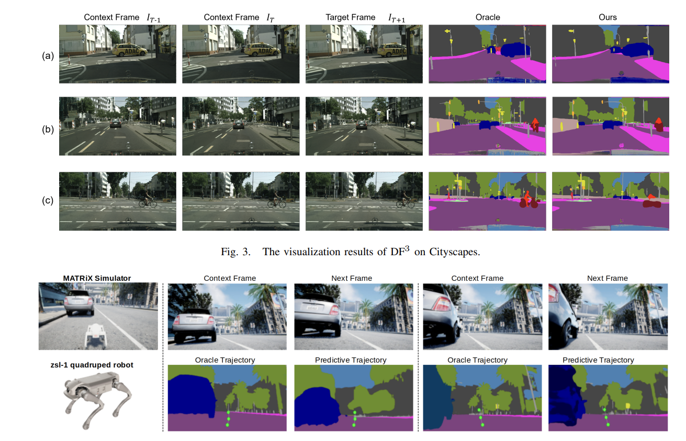

Research
I work on robot learning for humanoid and cognitive robots. The goal is a general-purpose system for long-horizon, physically complex whole-body control, in which a humanoid interacts with objects and its environment. This covers whole-body control and loco-manipulation, physics-based motion synthesis for 3D humanoids, vision-language-action models for humanoids, world-action models, and human–object and human–scene interaction.
Publications
Independent first author


Hand1000: Generating Realistic Hands from Text with Only 1,000 Images
AAAI Conference on Artificial Intelligence (AAAI), 2025. Accepted.
Incremental Reinforcement Learning for Multi-Task Humanoid-Object-Interaction
IEEE Robotics and Automation Letters (RA-L). Under review.
PCD-Humanoid: Point-Cloud Driven Whole-Body Humanoid Object Transport across 2,000 Warehouse Scenes
IEEE/CVF Winter Conference on Applications of Computer Vision (WACV), 2027. Under review.
Second author

FLIP: Flow-Centric Generative Planning as General-Purpose Manipulation World Model
International Conference on Learning Representations (ICLR), 2025. Accepted.

Mitigate Catastrophic Remembering via Continual Knowledge Purification for Noisy Lifelong Person Re-Identification
ACM International Conference on Multimedia (ACM MM), 2024. Accepted.
Fourth author

DF3: World Modeling via Decoder-Free Feature Forecasting in Autonomous Navigation
arXiv:2608.02428, 2026. Preprint.
Education
2025–present

The University of Manchester
PhD student in Computer Science. Cognitive Robotics Lab (CoRoLab). Supervisor: Prof. Angelo Cangelosi. Manchester, United Kingdom.
2021–2025
Peking University
BSc in Computer Science. Beijing, China. Undergraduate research with Prof. Shanghang Zhang and Prof. Jiahuan Zhou (Peking University), Prof. Lin Shao (National University of Singapore), and Prof. Bin Zhu (Singapore Management University).
Industry experience
2025–2026

X-Humanoid, Beijing Humanoid Robot Innovation Center
Research intern, on-site and remote. Beijing, China. Long-horizon whole-body loco-manipulation, including reinforcement learning teachers distilled into vision-language-action policies for continuous object transport in cluttered scenes.
Awards
2025
Dean’s Doctoral Scholarship
Faculty of Science and Engineering, The University of Manchester. Full scholarship. About 10 to 20 awards each year across the whole Faculty, after department nomination and a faculty interview.
2025
Outstanding Undergraduate Thesis
Peking University. University outstanding thesis, and one of the ten best theses in the School of EECS.